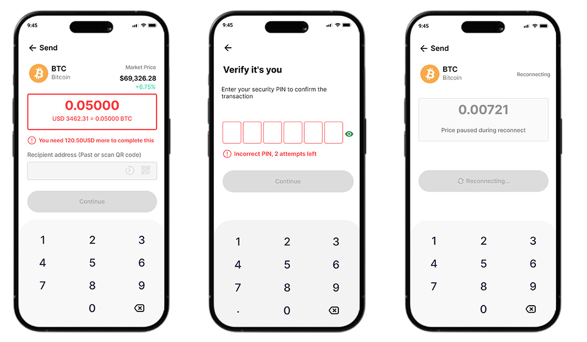

Pars Trust
Mobile Crypto Trading App
Role
Design assistant on this project, working under the guidance of a senior UI/UX designer. My focus was on competitive research and interface design — analyzing competitor apps, and building the wireframes and interactive prototype.

Project overview
Pars Trust wanted a mobile crypto trading app that could stand out in a crowded market. I worked as part of the design team on an app where users can check their portfolio, follow the market, and trade without extra steps getting in the way. The result is a clean, mobile-first app built around three main actions — buy, sell, and transfer — with a calm visual style that still feels right for something as high-stakes as money. My main contributions were the competitor research that shaped the direction, and the wireframes and prototype that brought it to screen.
Problem
Crypto platforms tend to throw a lot of data at users at once — candlestick charts, order books, percentage changes, alert badges, all competing for attention. For people who aren't full-time traders, this creates hesitation instead of confidence. As part of my research, I looked at competitor apps and public App Store / Google Play reviews, and found three problems kept coming up:
- Cluttered home screens: too much data users don't need at a glance.
- Desktop-first charts: interactions that feel built for a mouse, not a thumb.
- Friction-heavy transactions: too many steps, and confirmation states that aren't clear.
Solution
A focused mobile trading experience designed around the user's most common actions rather than a checklist of features. The home screen surfaces only total balance, top holdings, and a 24-hour performance summary. Buy, sell, and transfer are one or two taps away from any core screen. Charts are rebuilt for touch, with high-contrast lines and large time-range controls. A soft green visual system keeps the experience calm, reserving green and red exclusively for price movement so those signals stay unmistakable.
Competitive analysis (my contribution)
I audited four competing crypto apps to see what patterns users are already used to, and where the market was underserving everyday users in favor of power traders.

| Criteria | Coinbase | Binance | Kraken | Metamask | Pars Trust |
|---|---|---|---|---|---|
| Onboarding clarity | ❌ Weak | ❌ Weak | ⚠️ Moderate | ❌ Weak | ✅ Guided, low-friction |
| Chart built for touch | ❌ Desktop-first | ⚠️ Partial | ❌ Desktop-first | ⚠️ Partial | ✅ Rebuilt for thumb use |
| Home screen data density | ❌ High | ❌ High | ⚠️ Moderate | ❌ High | ✅ Balance, top holdings, 24h summary only |
| Transaction confirmation clarity | ❌ Inconsistent | ⚠️ Partial | ❌ Inconsistent | ⚠️ Partial | ✅ Explicit "Processing" state |
| Security / verification depth | ✅ Strong | ✅ Strong | ✅ Strong | ⚠️ Moderate | ✅ PIN verification on every transaction |
Challenges I found:
Most apps prioritize professional-grade data over everyday usability.
Onboarding is usually weak, dropping users straight into complexity with no orientation. Transaction confirmation flows are inconsistent across apps, which hurts trust right when users need reassurance most.
Strengths I found:
The strongest competitors have deep asset data and charting for advanced users, solid order-book and alert systems, and mature security/verification flows that build trust with frequent traders.
This research fed into the design principles and screen structure below, which I worked on with guidance from the senior designer on the project.
Design principles
Based on the research, the project was guided by four principles:
- Clarity First: reduce cognitive load on the core screens — portfolio, market, transaction.
- Speed: key actions (buy, sell, transfer) should be reachable in one or two taps.
- Trust: the visual system should communicate data clearly without feeling cold or overwhelming.
- Focus: design around the user's most frequent actions, not a full feature list.
Ideate & structure
I mapped out the core screen structure and action paths based on the principles above, working from what users do most often.
Key Design Decisions:
The app has five main sections in the bottom tab navigation, with real-time market data and wallet management front and center.
- Home: quick access to educational content and trending insights (Gainers/Losers/Top Volume).
- Market: browse all cryptocurrencies, filter by category, view detailed charts.
- Order: manage and view transaction history, completed and ongoing.
- Wallet: total balance, deposit, withdraw, send, receive.
- Account: profile, preferences, account settings.
Key User Flows:
- Trading Flow: Launch app → Home → Market → Pick asset → Buy or sell → Order done.
- Wallet Send Flow: Home → Wallet → Send crypto → Confirm payout → Verify PIN → Success.
- Wallet History Flow: Home → Wallet → History → Transaction detail.
- Order Management Flow: Home → Order → Filter orders → Order info.
Flow diagram — Wallet Send:
Mapping this one out visually is what made the PIN-verification step and the need for a distinct "Processing" state obvious — on paper it looked like one more tap, but as a flow it's clearly the highest-stakes moment in the whole app.
Prototype (my contribution)
I moved from paper sketches to digital wireframes, then built the interactive prototype.
Low-Fidelity Wireframes:
I started with paper sketches and low-fi digital wireframes to work out layout priorities based on the research findings simplifying onboarding, locking the nav bar to the bottom for thumb reach, and setting up asset cards to show key data (like 24h % change) right away without drilling in.

Interactive Prototype:
I built a high-fidelity interactive prototype in Figma, focused on the transaction and wallet management Flows the real-time price chart with touch-friendly time selectors, a bottom action bar for buy/sell/transfer, PIN verification for transaction security, and confirmation screens (like "Purchase Complete").
Based on the confirmation-flow research (inconsistent, low-trust patterns I found across competitor apps), I added a "Processing" state between PIN entry and the final "Transfer Complete" screen, with the confirm button disabled during that window to give the user a clear signal that the system had registered their action.

Handling Failure Gracefully:
Money-moving flows can't fail silently, so I designed explicit states for the moments where a transaction can't complete as expected:
- Insufficient balance: The buy/sell/transfer action is disabled before submission (not after), with the exact shortfall shown inline so the user doesn't hit a wall at the PIN step.
- PIN mismatch or timeout: After a failed PIN attempt, the field clears with a clear retry message; after repeated failures, the flow locks temporarily and explains why, instead of failing silently.
- Network/price-feed interruption mid-transaction: If live pricing drops during a buy/sell, the confirm action is paused and the user is shown a "reconnecting" state rather than letting them confirm against stale data.
These states matter more in a financial app than almost anywhere else — an unclear failure isn't just a bad experience, it's a trust problem.

Validation plan
This project didn't ship, so nothing below has been tested with real users yet. Here's how I'd validate it if it moved forward:
Success metrics:
- Time for a returning user to go from opening the app to completing a buy or sell
- Onboarding completion rate — how many new users make it through without dropping off halfway
- Volume of support contacts asking whether a transaction actually went through
- PIN lockout rate, as a signal for whether the step reads as secure or just annoying
Prototype-specific questions:
- Does the "Processing" state reduce hesitation at the confirm step, or do users still feel unsure whether their transaction went through?
- Can first-time users complete a buy/sell/transfer without hesitating on any screen, compared to their usual app?
- Do the insufficient-balance and PIN-failure states get noticed and understood before users retry the action?
Conclusion:
Working on this project, especially the competitive research, showed me how much trust in financial apps depends on the small feedback moments — the silence between an action and its confirmation is where a lot of competitor apps lose users. That's what I designed for directly in the prototype: the "Processing" state, and explicit handling for every way a transaction can go wrong.